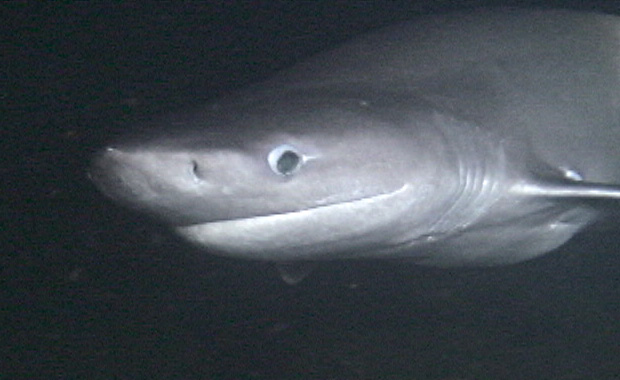
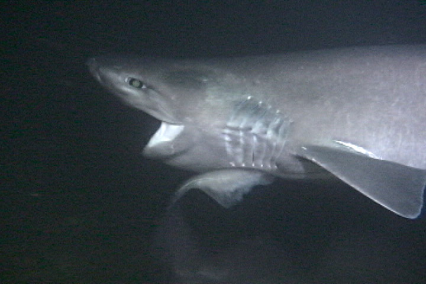

Emerald Diving
Explore the coastal and inland waters of
Washington and BC
Explore the coastal and inland waters of
Washington and BC


Photo Gallery Slideshow
Photo Gallery Slideshow
The enlargement viewer only works properly once ALL images on this page are loaded.
The summer of 2004 proved to be a very exciting time to dive Three Tree Point in Burien, just south of Seattle. A relatively high concentration of bluntnose sixgill sharks frequented this area for reasons unknown. My dive buddies and I had numerous encounters with these sharks from July through October - many times we had multiple sharks join our dives. We identified about 10 different animals. However, the activity dissipated in late October. We had a few brief sightings in 2005, but nowhere near the frenzy of activity from the year prior. I have not seen a sixgill at Three Tree Point since 2005 until a lone encounter with a 6' animal in July of 2008. What brought high concentrations of these sharks to the Three Tree Point area is a mystery, although it was rumored that a dead whale carcass was sunk somewhere nearby in 300 feet of water.

The size of sharks we encountered in 2004 varied from 5 to 11 feet in length, which is relatively small by six gill standards. Bluntnose sixgills are the third largest carnivorous shark in the world and can grow over 18' in length. The sharks we were encountered were younger, immature sharks with the possible exception of a rather large 11' female that dwarfed the other sixgills. Almost all these sharks filmed were non-aggressive towards us. The exception was one 8' female that had to be forcefully pushed away with a PVC pole on several occasions. Unlike many better known sharks that look up for food, sixgills tends to look down. Therefore, we made a point of staying off the bottom as much as we could when sharks were in the area.
Most chance encounters with six gills consist of the shark approaching the diver and making one or two passes within 3 feet. Once its curiosity is satisfied, the shark typically swims off into the dark in a leisurely fashion. These animals do seem to have an aversion to our bright dive lights.
I shot all of this video at Three Tree Point in 2004. Enjoy - these are very special animals and a very important part of the natural balance. They currently are - and should be - protected. It is illegal to target or retain bluntnose sixgill sharks in Puget Sound. For more information regarding sixgill sharks, please read the research report from the Seattle Aquarium below.
Most chance encounters with six gills consist of the shark approaching the diver and making one or two passes within 3 feet. Once its curiosity is satisfied, the shark typically swims off into the dark in a leisurely fashion. These animals do seem to have an aversion to our bright dive lights.
I shot all of this video at Three Tree Point in 2004. Enjoy - these are very special animals and a very important part of the natural balance. They currently are - and should be - protected. It is illegal to target or retain bluntnose sixgill sharks in Puget Sound. For more information regarding sixgill sharks, please read the research report from the Seattle Aquarium below.

Sixgill Shark Research Program
The Seattle aquarium is participating in a long term investigation into the ecological role of the sixgill shark. Primary research goals are to identify individual animals, movement patterns and home ranges, gender ratio, local abundance, and population boundaries. This is being accomplished through a nested study using, visual tagging, genetic fingerprinting and acoustic monitoring. Secondary goals are establish the Aquarium as the public information center on sixgill shark conservation, research, natural history and sightings through the Aquarium’s exhibitry, programs and interactive web site.
Research Partners
The work is being performed by collaborators at Point Defiance Zoo and Aquarium, Washington Department of Fish and Wildlife, The University of Washington, NOAA, National Marine Fisheries Service and Seattle Aquarium.
Early Results
Puget Sound appears to harbor a large number of immature sixgill sharks on a year round basis. The importance of this habitat to their early life is history is not yet quantified. Some mature sixgill sharks may spend the majority of their time outside the Sound only returning periodically. The factors driving this movement are not yet identified but pupping, mating or seasonal food availability may all affect these movements.
Many immature sixgill sharks appear to stay together as cohort groups (siblings from a single female) for extended periods of time (up to 9 feet in length), possibly until the animals reach sexual maturity (>10 feet in length). These groupings are seen in diver sightings of tagged and untagged sharks and in longline fishing efforts on these animals. Genetic analysis of members of these small groups frequently shows a high degree of relatedness (Full or half siblings). These groups appear to exist among sixgills from birth up to 9 feet in length. Insufficient samples of mature sharks exist to make statements on mature animal associations.
Genetic analysis of a stranded female sixgill and her full term pups found in 2007 indicated a high probability of polyandry (multiple male fertilization of a single female) in sixgills with up to eight males contributing to the genetic diversity found in the female’s litter. This is consistent with results from several other shark species.
The number of related individuals suggests site fidelity by age classes and may lend support to the hypothesis that the nearshore, relatively shallow habitats are inhabited by sub-adult cohorts.
Data from 2004/2005 is currently being analyzed to determine how many cohort groups were present in Elliot Bay area during that time. As there exists no reliable method of aging the sharks at this time growth rates and age of the observed sharks are unknown.
It is still unknown how long the cohorts stay in Puget Sound. The high numbers of shark sightings during 2004/2005 may be the result of many factors that are as yet unexamined. Local water conditions, food availability, or just a coincidence of several year classes of sharks could explain their observed abundance.
Recent efforts of NOAA and the aquarium have shown a decline in sharks in Elliott Bay. It is unknown whether this is a change in their abundance locally or merely a redistribution of the animals to other areas. Acoustic telemetry data is being collected to determine the movement patterns of the tagged sharks present in local waters. Aquarium research events throughout 2008 had few sharks present and showed a marked difference in their behavior while at the research station. Effort are underway to answer what factors are most significant in this change in apparent sixgill shark local abundance.
The Seattle aquarium is participating in a long term investigation into the ecological role of the sixgill shark. Primary research goals are to identify individual animals, movement patterns and home ranges, gender ratio, local abundance, and population boundaries. This is being accomplished through a nested study using, visual tagging, genetic fingerprinting and acoustic monitoring. Secondary goals are establish the Aquarium as the public information center on sixgill shark conservation, research, natural history and sightings through the Aquarium’s exhibitry, programs and interactive web site.
Research Partners
The work is being performed by collaborators at Point Defiance Zoo and Aquarium, Washington Department of Fish and Wildlife, The University of Washington, NOAA, National Marine Fisheries Service and Seattle Aquarium.
Early Results
Puget Sound appears to harbor a large number of immature sixgill sharks on a year round basis. The importance of this habitat to their early life is history is not yet quantified. Some mature sixgill sharks may spend the majority of their time outside the Sound only returning periodically. The factors driving this movement are not yet identified but pupping, mating or seasonal food availability may all affect these movements.
Many immature sixgill sharks appear to stay together as cohort groups (siblings from a single female) for extended periods of time (up to 9 feet in length), possibly until the animals reach sexual maturity (>10 feet in length). These groupings are seen in diver sightings of tagged and untagged sharks and in longline fishing efforts on these animals. Genetic analysis of members of these small groups frequently shows a high degree of relatedness (Full or half siblings). These groups appear to exist among sixgills from birth up to 9 feet in length. Insufficient samples of mature sharks exist to make statements on mature animal associations.
Genetic analysis of a stranded female sixgill and her full term pups found in 2007 indicated a high probability of polyandry (multiple male fertilization of a single female) in sixgills with up to eight males contributing to the genetic diversity found in the female’s litter. This is consistent with results from several other shark species.
The number of related individuals suggests site fidelity by age classes and may lend support to the hypothesis that the nearshore, relatively shallow habitats are inhabited by sub-adult cohorts.
Data from 2004/2005 is currently being analyzed to determine how many cohort groups were present in Elliot Bay area during that time. As there exists no reliable method of aging the sharks at this time growth rates and age of the observed sharks are unknown.
It is still unknown how long the cohorts stay in Puget Sound. The high numbers of shark sightings during 2004/2005 may be the result of many factors that are as yet unexamined. Local water conditions, food availability, or just a coincidence of several year classes of sharks could explain their observed abundance.
Recent efforts of NOAA and the aquarium have shown a decline in sharks in Elliott Bay. It is unknown whether this is a change in their abundance locally or merely a redistribution of the animals to other areas. Acoustic telemetry data is being collected to determine the movement patterns of the tagged sharks present in local waters. Aquarium research events throughout 2008 had few sharks present and showed a marked difference in their behavior while at the research station. Effort are underway to answer what factors are most significant in this change in apparent sixgill shark local abundance.
Seattle Aquarium Sixgill Shark Research Report
Published with permission from Jeff Christiansen, the leading authority on Puget Sound sixgill populations at the Seattle Aquarium.
Posted December, 2008.
Published with permission from Jeff Christiansen, the leading authority on Puget Sound sixgill populations at the Seattle Aquarium.
Posted December, 2008.